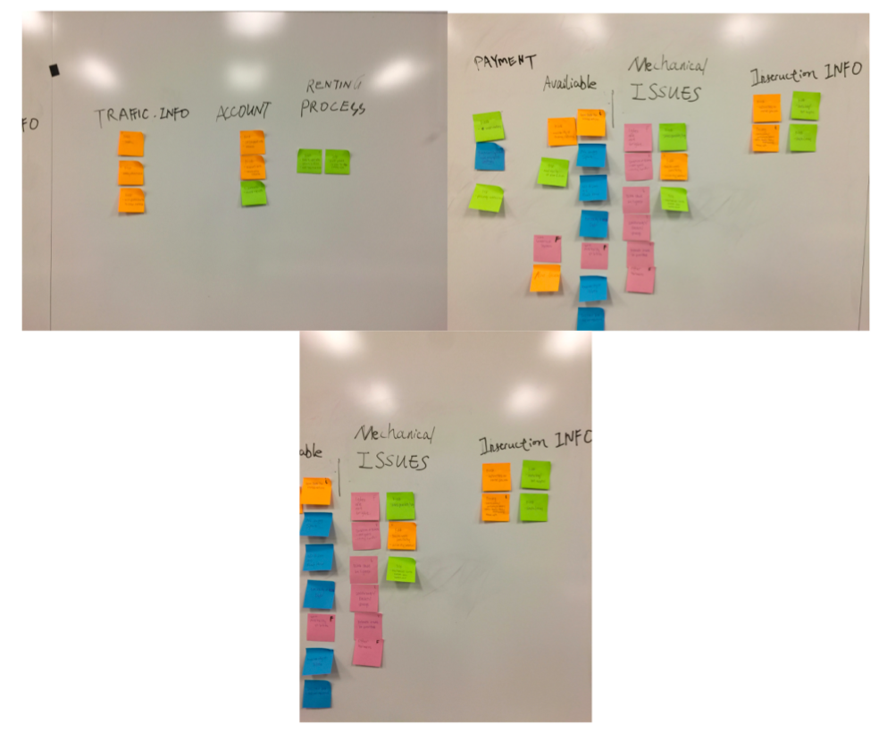
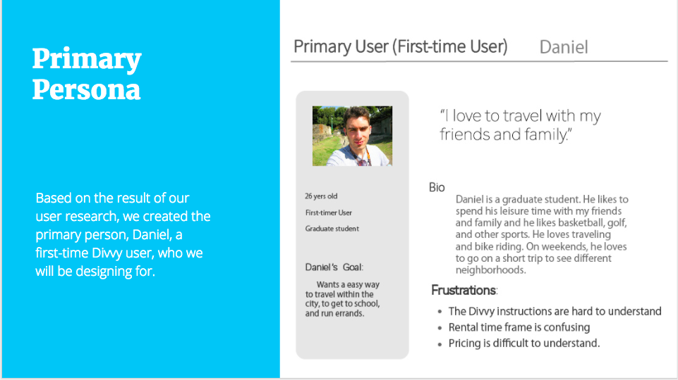
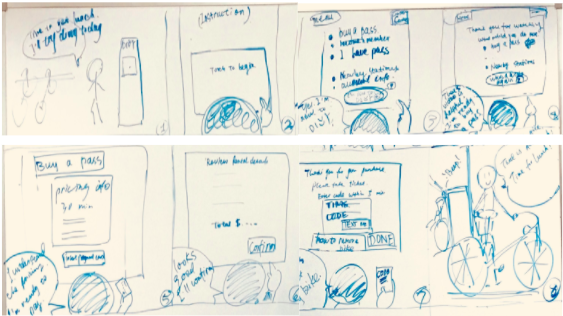
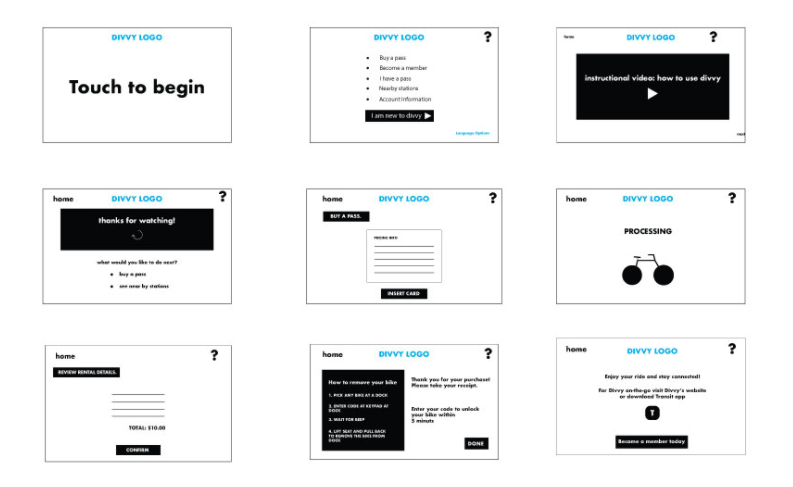
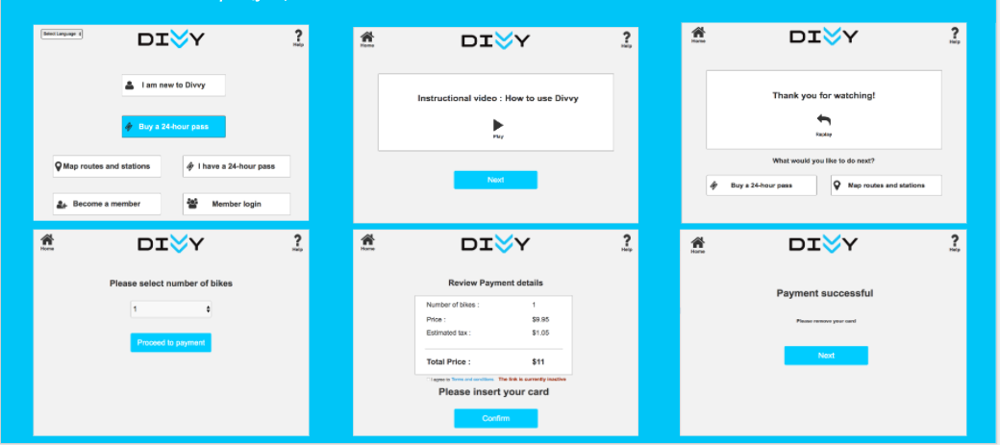
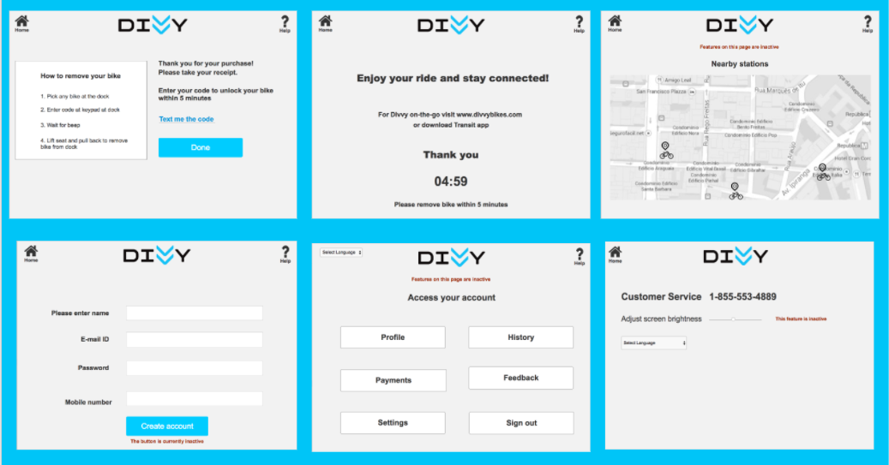
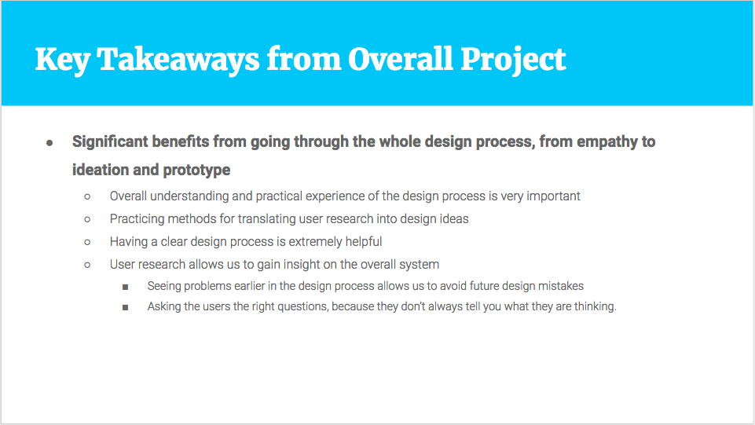

Problem Statement: We have observed Divvy Kiosk is impacting user experience with poor screen flow, unnecessary screens and slow system response. How might we improve so that user have great experience?
Solution:
The purpose of the project is to identify the inconsistancies between user's expectations and their actual experience during their interaction with the current Divvy kiosk system in order to make design enhancements for a better overall Divvy experience.
User Research Methodology
● Secondary research
● Inquiry research
Data Analysis
We created an affinity diagram to formally analyze the qualitative data from the questionnaire and Yelp reviews.
There were a variety of features that users (and potential users, identifying as never have used Divvy) noted in their desires for what they wanted the kiosk to contain. As for what the users expected from the kiosk, they wanted to be able to plan their bike routes, including station locations and nearby attractions, but also be able to end at a station that had dock availability. They also wanted to be able to access their account information and contact customer service.
Persona and Scenario
Based on the result of our user research, we created the primary person, Daniel, a first-time Divvy user, who we will be designing for.
We created the design scenario to illustrate the interaction between our primary persona, Daniel, and the redesign kiosk interface, the emotional impacts, and Daniel’s decision making. It guides us to create the initial sketches and wireframes.
Conceptual Design
Storyboard
We sketched the storyboard from the interaction perspective based on our design scenario and primary persona. It shows how Daniel interacts with the system, and the system’s response.
Intermediate Design
Wireframes
Based on our storyboard from the Conceptual Design, we laid out the contents and functions we want to implement.
Detailed Design - Prototype
Prototype with visual comps
We started the detailed design with specifications on the layout of the system: font size, weights, button size and colors.

Stuctured Inspection and Design Updates
We recruited participants from our user groups for usability evaluation and design updates according to their recommendation were implemented
